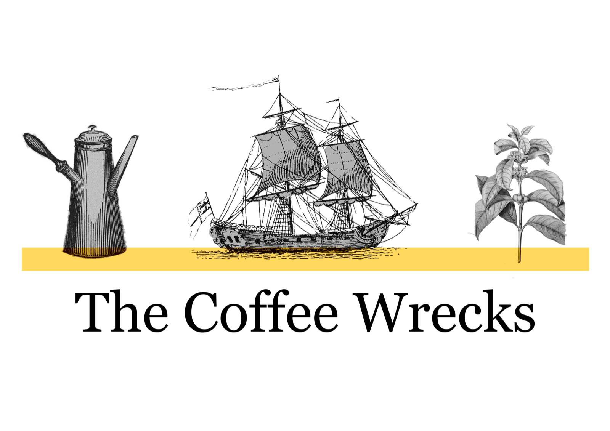

Sequencing analysis of degraded coffee-bean DNA samples against the Coffea arabica reference genome.
This report summarizes the bioinformatics pipeline results for each sample: variant calls, per-contig coverage, and local read depth around called SNPs. Select a sample below to view its full breakdown.
Ancient DNA recovered from the Vrouw Maria wreck, sequenced and called against the reference genome.
Preliminary results — the pipeline is still being refined and these results may change.
Last updated: September 15, 2026
Shipwreck · Parainen, Finland
[A one-line hook — what the Vrouw Maria is, and why she matters to this project.]
[Placeholder: the history of the wreck, its discovery, and its role as the archaeological source of the coffee-bean samples analyzed in this study.]